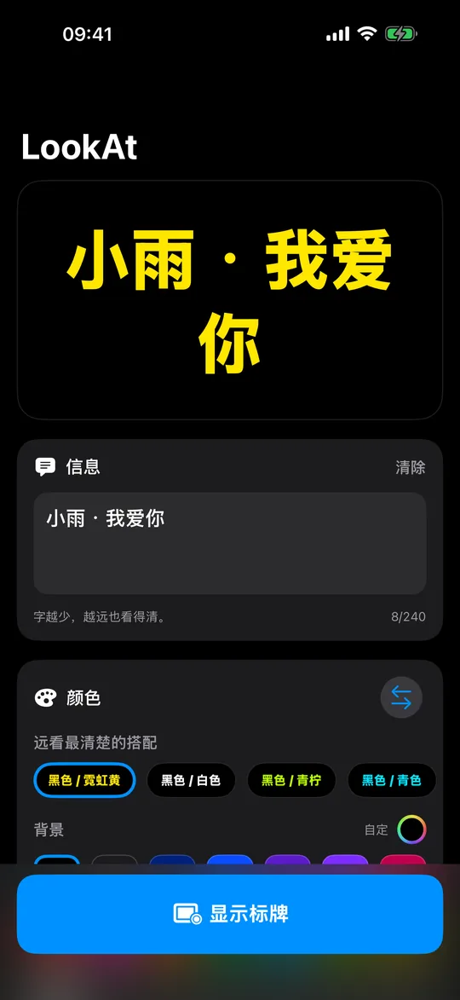
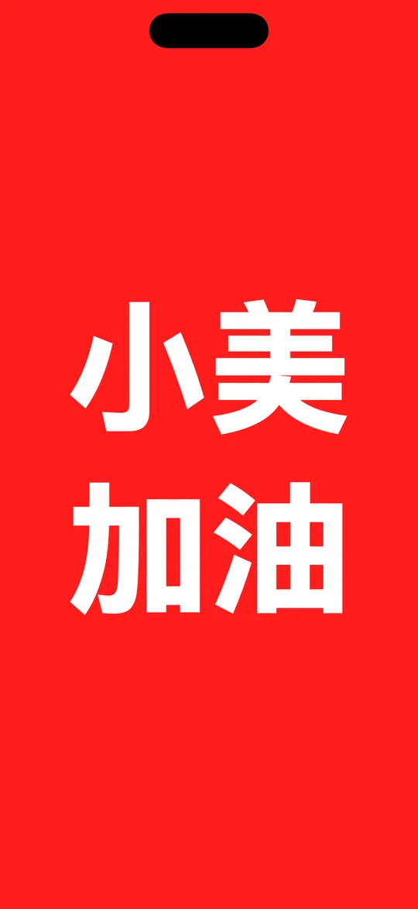
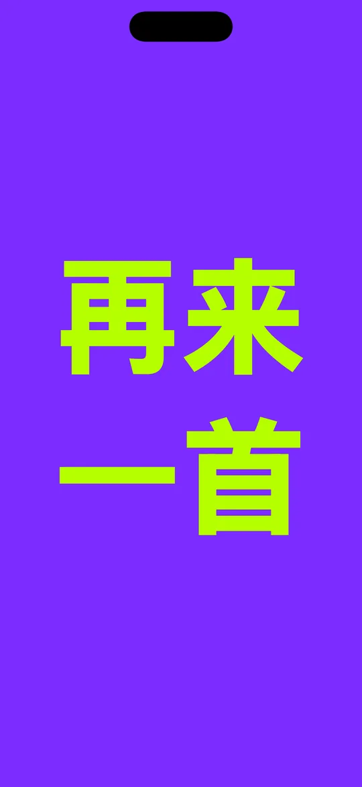
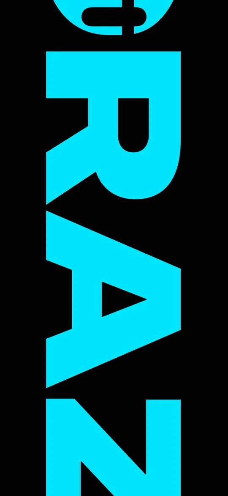

量过的颜色
真的
看得清的搭配
真实的 WCAG 对比度，在灯暗下来之前就检查好。
把手机举起来
输入文字，选两种颜色，举起来。
把手机举起来，让人看见你。LookAt 把屏幕变成一块牌子，字大到从场地最后一排也读得出来：输入信息，选两种颜色，举起来。
免费 · iPhone 和 iPad · iOS 18 或更高版本
决定距离的是字高和对比度，而不只是亮度。LookAt 按大写字高来定每一种字体的大小，所以无论你选哪一种，文字占屏幕的比例都一样。它还会测量你选的两种颜色之间真实的 WCAG 对比度：在你带着谁也看不清的配色走进昏暗场地之前就提醒你，配色确实处在临界值时还会加一圈光晕。

量过的颜色
真实的 WCAG 对比度，在灯暗下来之前就检查好。
点阵
不是字体：每个笔画都是单独点亮的灯。

背景15色 · 文字14色
七种字体，都为远距离而选。

滚动 · 固定 · 闪烁
最多 240 个字符，速度由你决定。

文字大小
把文字大小拉到100%，超大字滚动而过。
无需账号。没有广告。不做追踪。完全不联网：LookAt 从来没有请求过网络连接，所以你输入的内容不会离开手机。免费，里面没有任何要买的东西。
关于手机能做到什么，说一句实话：屏幕很亮，但它不是大屏。在直射阳光下，或者超过几十米的距离，再好的配色也会输。LookAt 最擅长的场合是室内、天黑之后、以及人群之中——到达大厅、演唱会、终点线、学校汇演。
今晚的演唱会，想点一首歌？被人群淹没了？写在 LookAt 上，举起手机，让他看见你。
免费 · iPhone 和 iPad · iOS 18 或更高版本